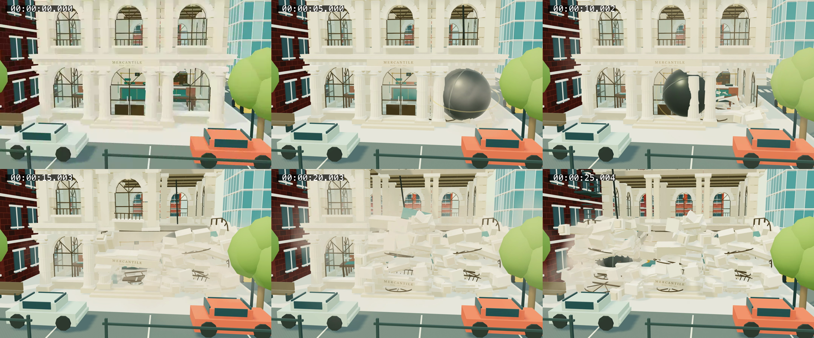

Same street approach and three native ball targets. Wall-clock recordings; individual impact timing varies.
Accepted bank checkpoint
Banking hall continuation
Targets: right window, reachable teller area through the breach, then left window. Canvas recordings omit the controls; screenshots and input records preserve them.
Rewind, replay, a different future, rebuild
Larger collapse
Timestamped progression

Read REVIEW.md for references, exact inputs, verification and limitations.